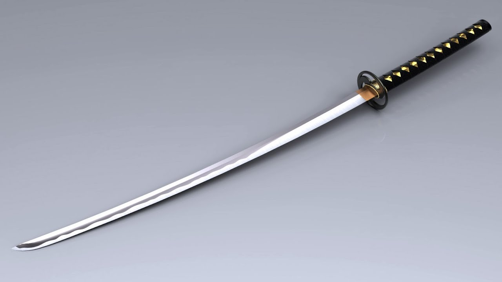
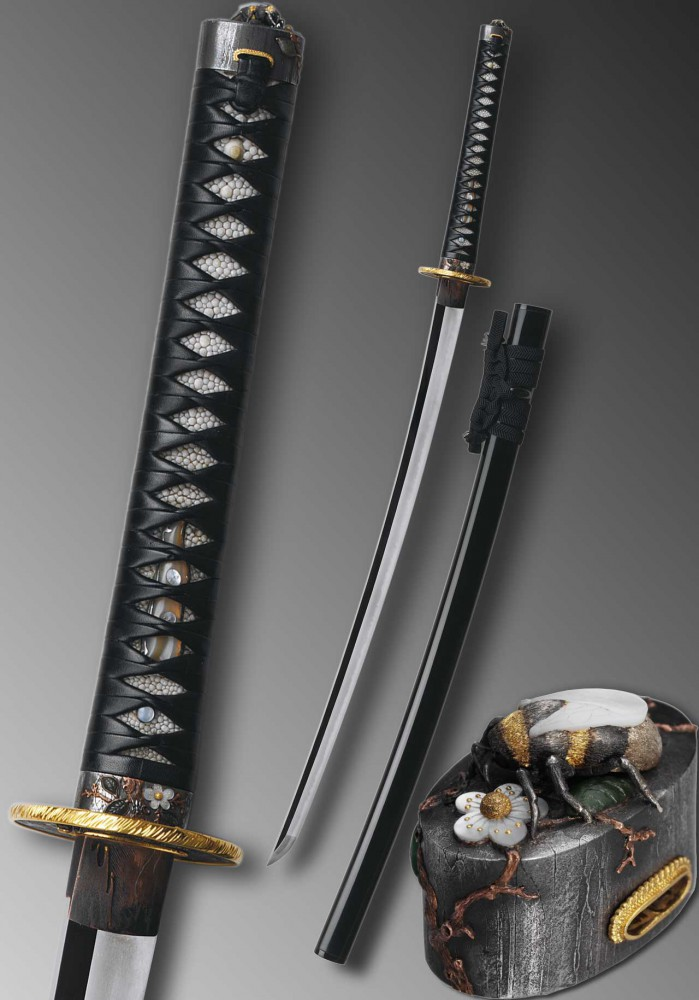
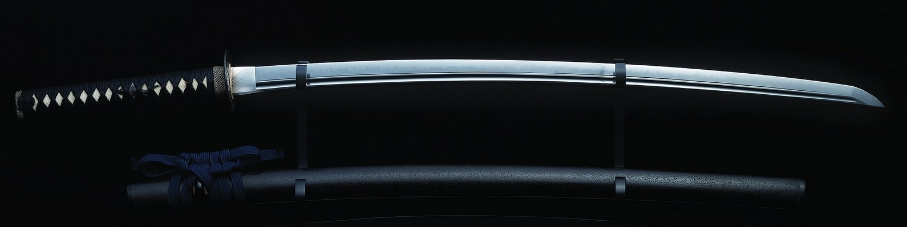

Великая кузница "Katana Zero"
Добро пожаловать в Katana Zero! Мы специализируемся на высококачественных японских самурайских мечах для коллекционеров, мастеров боевых искусств и энтузиастов.
Katana Zero начинала как небольшой бизнес в Сочи, Россия, и продавала подлинные японские самурайские мечи, китайские мечи, аниме и игровые реплики мечей на основных торговых площадках электронной коммерции. У нас большие мечты. Наша страсть к мечам ручной работы означает, что мы предоставляем нашим клиентам только продукцию высочайшего качества, которая гарантированно удовлетворит их потребности и оставит их довольными!
 Все наши самурайские мечи разработаны в Японии, изготовлены вручную в китайском городе мечей с более чем 2600-летней историей изготовления мечей. Эти мечи станут лучшим выбором для вашей коллекции или подарка друзьям. Настоящая катана для тренировок и разрубания должна иметь надежную конструкцию, быть прочной не деформироваться при работе со спортивными мишенями, держать заточку и форму.
Многие покупают японский меч для подарка или как мечту детства. Наши катаны отлично справляются с рубкой тонких веток или дачной сирени. Пластиковые бутылки, фрукты и овощи прекрасно подойдут для первых упражнений и для увлекательного занятия в лесу или на даче.
Кроме того, мы предоставляем индивидуальные услуги по изготовлению японских самурайских мечей. Пожалуйста, отправьте нам свои особые потребности по электронной почте. Мы будем рады предоставить вам качественные мечи по индивидуальному заказу.
Все катаны традиционно высочайшего качества. ©